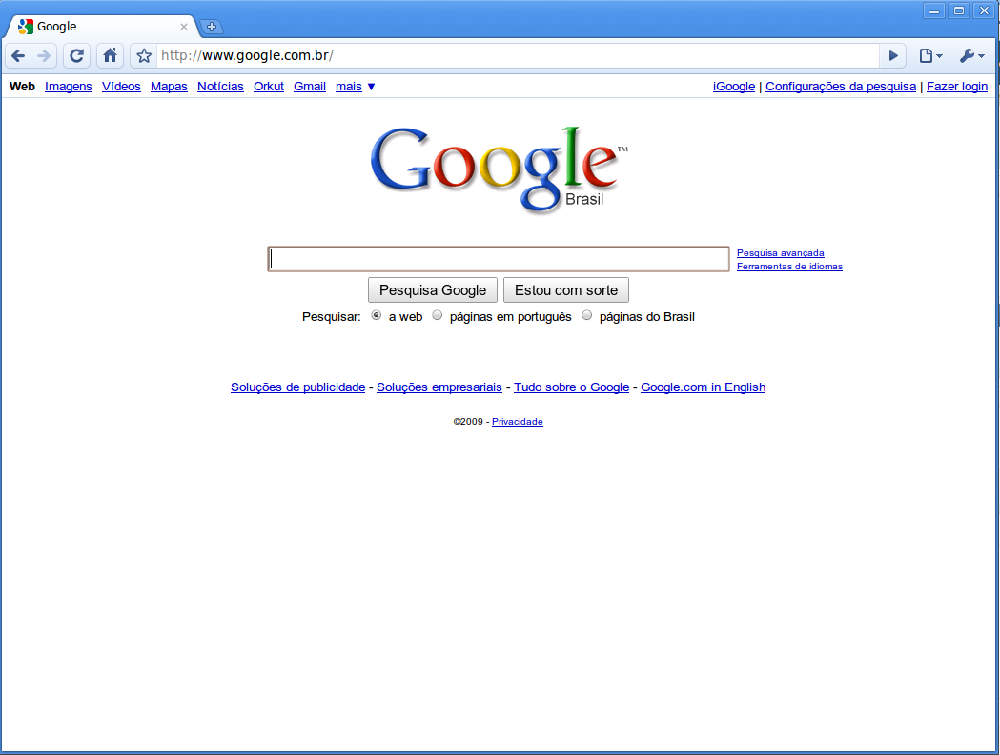
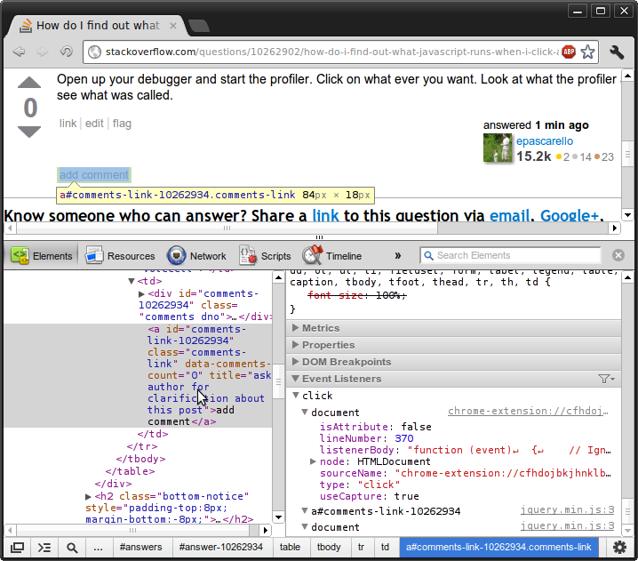
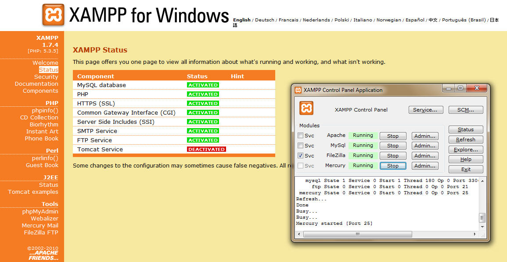
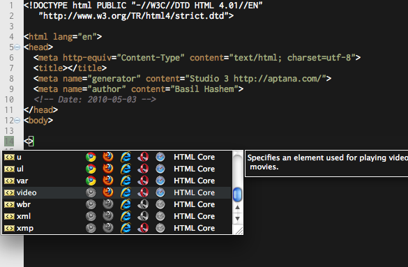
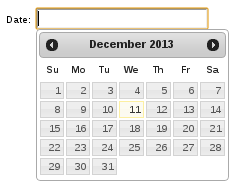

Desenvolvimento de sites para a web 2.0 com
Agradecimentos
- Cézar Ayran
- Eloá Alves
- Augusto Flávio
- Caique Oliveira
- Jayson Sabino
- José Fernando
- Railan Xisto
- Pedro José
- Rafael Aquino
O que é o jQuery?
Biblioteca Javascript que visa facilitar a execução de tarefas comuns como:
- Manipulação de elementos na página
- Tratamento de eventos
- Animação
- Comunicação com o servidor via AJAX
O jQuery NÃO É uma linguagem de programação.
- Desenvolvedor: The jQuery Foundation
- Versão: 1.8.3 (utilizada), 1.10.2 (legada) ou 2.0.3 (atual)
- Página oficial: http://jquery.com/
Por quê o jQuery é tão bom?
- Funcionamento baseado em princípios do HTML e do CSS
- Apresenta um padrão de sintaxe fácil de aprender
- Possui arquitetura modular e pode ser estendido através de plugins.
- Provê compatibilidade entre os diversos navegadores existentes
- Trabalha sempre com conjuntos
- Permite a execução de várias ações sequenciais com apenas um comando através de method chaining
Ferramentas utilizadas
Google Chrome

Ferramentas utilizadas
Chrome DevTools

Ferramentas utilizadas
XAMPP

Ferramentas utilizadas
Aptana Studio

Usando o jQuery
O jQuery pode ser obtido:
- Através do site oficial:
- Através de um CDN:
É necessário importar apenas um script:
<!-- Scripts -->
<script type="text/javascript" src="jquery-1.8.3.min.js"></script>
Usando o jQuery
Estrutura comum dos arquivos HTML:
<html>
<head>
<title></title>
<!-- CSS -->
<style></style>
<!-- Scripts -->
<script></script>
</head>
<body>
<!-- Conteúdo -->
</body>
</html>
Usando o jQuery
Estrutura comum dos arquivos HTML:
<html>
<head>
<title></title>
</head>
<body>
<!-- Conteúdo -->
<!-- CSS -->
<style></style>
<!-- Scripts -->
<script></script>
</body>
</html>
Usando o jQuery
Após importar e inicializar o jQuery, é possível executar comandos:
// var $ = jQuery.noConflict();
$(document).ready(function() {
$('#tab-categorias').parent('li').
addClass('ui-tabs-active ui-state-active');
});
Abra a aplicação de exemplo e experimente executar esse comando no console do navegador:
$('#tab-categorias').parent('li').
addClass('ui-tabs-active ui-state-active');
Com e sem jQuery
Exemplo 1: tabela com coloração alternada ("zebra")
- CSS:
.impar { background: #FFFFFF; }
.par { background: #F2F2F2; }
- HTML:
<table id="tabela_exemplo">
<tr><td>Linha 1</td></tr>
<tr><td>Linha 2</td></tr>
<tr><td>Linha 3</td></tr>
<tr><td>Linha 4</td></tr>
<tr><td>Linha 5</td></tr>
</table>
Com e sem jQuery
Exemplo 1 sem jQuery
function hasClass(el, cl) {
var regex = new RegExp('(?:\\s|^)' + cl + '(?:\\s|$)');
return !!el.className.match(regex);
}
function addClass(el, cl) {
el.className += ' ' + cl;
} // Continua...
Com e sem jQuery
Exemplo 1 sem jQuery
window.onload = function() {
var tabela = document.getElementById('tabela_exemplo');
var linhas = tabela.getElementsByTagName('tr');
for (var l = 0; l < linhas.length; l++) {
var classe;
if (l % 2) {
classe = 'par';
} else {
classe = 'impar';
}
if (!hasClass(linhas[l], classe)) {
addClass(linhas[l], classe);
}
}
}; // Fim
Com e sem jQuery
Exemplo 1 com jQuery
$(function() {
$('#tabela_exemplo tr:odd').addClass('impar');
$('#tabela_exemplo tr:even').addClass('par');
});
Com e sem jQuery
Exemplo 2: responder a um evento onclick (permitindo outros eventos)
Deseja-se executar a seguinte função toda vez que ocorrer um clique em um link (elemento a):
function teste() {
alert("Você clicou em um link!");
}
Com e sem jQuery
var addEvent = (function() { // Exemplo 2 sem jQuery
var filter = function(el, type, fn) {
for (var i = 0, len = el.length; i < len; i++) {
addEvent(el[i], type, fn);
}
};
if (document.addEventListener) {
return function(el, type, fn) {
if (el && el.nodeName || el === window) {
el.addEventListener(type, fn, false);
} else if (el && el.length) {
filter(el, type, fn);
}
};
} // Continua...
Com e sem jQuery
return function(el, type, fn) {
if (el && el.nodeName || el === window) {
el.attachEvent('on' + type, function() {
return fn.call(el, window.event);
});
} else if (el && el.length) {
filter(el, type, fn);
}
};
})();
window.onload = function() {
addEvent(document.getElementsByTagName('a'), 'click', teste);
}
Com e sem jQuery
Exemplo 2 com jQuery:
$(function() {
$('a').click(teste);
});
Contrapontos
- A versão mais nova (2.0.3) não suporta IE 6, 7 e 8
- É uma biblioteca genérica Javascript de 267KB (pesada)
- Nem todos os módulos são necessários
- A versão compactada (91KB) precisa ser descompactada pelo navegador antes de fazer qualquer outra coisa
- Mesmo a versão compactada pode ser pesada para dispositivos móveis
- Existem alternativas mais leves, como o Zepto.JS
- 10KB compactado, 25KB descompactado, compatível com jQuery)
Componentes
Além de possuir várias funcionalidades, o jQuery pode ser expandido através de componentes. Aqui veremos os que foram utilizados para desenvolver a aplicação de exemplo:
- jQuery UI
- Tooltipster
- DataTables
- jQuery Validation Plugin
- jQuery Timepicker
- jQuery Mask Plugin
- Notify.js
- jCarousel
- fancyBox
- jQuery Tag-it!
- CKEditor
- Uploadify
- jQuery BlockUI Plugin
- formee
jQuery UI
Biblioteca de componentes de interface gráfica:
- Accordion
- Autocomplete
- Button
- Datepicker
- Dialog
- Menu
- Progressbar
- Slider
- Spinner
- Tabs
- Tooltip
- Draggable
- Droppable
- Resizable
- Selectable
- Sortable
- Hide
- Show
- Toggle
- E mais...
jQuery UI
Arquivos importados:
<!-- CSS -->
<link rel="stylesheet" type="text/css" href="jquery-ui/css/cupertino/jquery-ui-1.10.3.custom.min.css" />
<!-- Scripts -->
<script type="text/javascript" src="jquery-ui/js/jquery-ui-1.10.3.custom.min.js"></script>
<script type="text/javascript" src="jquery-ui/js/jquery.ui.datepicker-pt-BR.js"></script>
jQuery UI
$(document).ready(function() {
$("body").addClass("ui-form");
$("button, input[type=button], input[type=submit], a.button").button();
$("#navegacao li").mouseover(function() {
$(this).addClass('ui-state-hover');
});
$("#navegacao li").mouseout(function() {
$(this).removeClass('ui-state-hover');
});
});
jQuery UI
// comum.js
$.fn.extend({
tabAtiva: function() {
$(this).parent('li').addClass('ui-tabs-active ui-state-active');
return $(this);
}
});
$('#tab-contatos').tabAtiva(); // contatos.js
$('#tab-categorias').tabAtiva(); // categorias.js
$('#tab-email').tabAtiva(); // email.js
Botão com ícone:
<button class="botao_com_icone" id="btn_novo_contato">
<span class='icone icone_22x22 icone_novo_contato'>Novo contato</span></button>
jQuery UI - Dialog
Uso básico:
-
HTML:
<div id="dialog" title="Aqui vem o título">
<p>Conteúdo da caixa de diálogo.</p>
</div>
-
Javascript:
$(document).ready(function() {
$("#dialogo").dialog();
});
jQuery UI - Dialog
Configurações padrão:
$.extend($.ui.dialog.prototype.options, {
autoOpen: false,
modal: true,
width: 800,
show: {
effect: "blind",
duration: 400
},
hide: {
effect: "blind",
duration: 200
}
// TODO Pesquisar um meio viável de acrescentar scroll ao diálogo
});
jQuery UI - Dialog
$.confirmacao = function(mensagem, callbackSim, callbackNao) {
$('div.dialogo_confirmacao').remove();
$('#conteudo').append('<div class="dialogo_confirmacao" title="Confirmação">'+mensagem+'</div>');
$('div.dialogo_confirmacao').dialog({
closeOnEscape: true,
buttons: {
'Sim': function() {
if (callbackSim != undefined) {
callbackSim();
}
$(this).dialog('close');
}, // Continua...
jQuery UI - Dialog
'Não' : function() {
if (callbackNao != undefined) {
callbackNao();
}
$(this).dialog('close');
}
}
}).dialog('open');
jQuery UI - Dialog
$('#editor_de_contato').dialog({
create: function() {
// Função chamada quando o dialog é criado
// Adiciona ícones aos botões Cancelar e Salvar
// [...]
},
open: function() {
// Função chamada toda vez que o dialog é aberto
// [...]
},
buttons: {
// [...]
}
});
jQuery UI - Datepicker

jQuery UI - Datepicker
Uso básico:
-
HTML:
<input type="text" class="data" />
-
Javascript:
$(document).ready(function() {
$("input.data").datepicker();
});
jQuery UI - Datepicker
$("input.data").datepicker({
changeMonth: true,
changeYear: true,
yearRange: '1920:+10',
showButtonPanel: true
});
jQuery UI - Sortable
Uso básico:
-
HTML:
<ul id="sortable">
<li class="ui-state-default">Item 1</li>
<li class="ui-state-default">Item 2</li>
<!-- [...] -->
<li class="ui-state-default">Item 7</li>
</ul>
-
Javascript:
$(document).ready(function() {
$("#sortable").sortable({
placeholder: "ui-state-highlight"
});
});
DataTables

DataTables
Arquivos importados:
<!-- CSS -->
<link rel="stylesheet" type="text/css" href="datatables/css/demo_table_jui.css" />
<!-- Scripts -->
<script type="text/javascript" src="datatables/js/jquery.dataTables.min.js"></script>
DataTables
Uso básico:
-
HTML:
<table id="tabela_exemplo" class="display">
<thead>
<tr>
<th>Coluna 1</th>
<th>Coluna 2</th>
</tr>
</thead>
<tbody>
<!-- Aqui vêm as linhas da tabela -->
</tbody>
</table>
DataTables
Uso básico:
-
Javascript:
$(document).ready(function() {
$("#tabela_exemplo").dataTable();
});
DataTables
Configurações padrão:
$.extend($.fn.dataTable.defaults, {
"bJQueryUI": true,
"aLengthMenu": [10, 20, 50, 100],
"iDisplayLength": 10,
"bPaginate" : true,
"sPaginationType" : "full_numbers",
"bServerSide": true,
"bDeferRender": true,
"sServerMethod": "POST", // Continua...
DataTables
"fnServerData": function (sSource, aoData, fnCallback, oSettings) {
oSettings.jqXHR = $.ajax({
async: false,
dataType: 'json',
type: 'POST',
url: sSource,
data: aoData,
success: fnCallback
});
},
"fnDrawCallback": function() {
$('.tooltipster').tooltip();
}, // Continua...
DataTables
"oLanguage": {
"sProcessing": "Processando...",
"sLengthMenu": "Mostrar _MENU_ registros",
"sZeroRecords": "Não foram encontrados resultados",
"sInfo": "Mostrando de _START_ até _END_ de _TOTAL_ registros",
"sInfoEmpty": "Mostrando de 0 até 0 de 0 registros",
"sInfoFiltered": "(filtrado de _MAX_ registros no total)",
"sInfoPostFix": "",
"sSearch": "Buscar:",
// [...]
"sLast": "Último"
}
}
}); // Fim! :)
DataTables
Listagem de categorias via AJAX:
$('#table_categoria').dataTable({
"sAjaxSource": "ajax/listar.php",
"aoColumns": [
null,
{"sWidth": "100px"},
{"bSortable": false, "sWidth": "70px"}
],
"aoColumnDefs": [{
aTargets: [2],
mRender: function(data, type, full) {
var html = "<div class='acoes_wrapper'>";
// [...]
return html;
}
}], // Continua...
DataTables
"aaSorting": [
[0, "asc"],
],
"fnDrawCallback": function() {
// Estiliza as colunas Contatos e Ações
$('#table_categoria tr:not([role=row])').each(function(){
$(this).find('td:eq(1)').
addClass('table_categoria_contatos');
$(this).find('td:eq(2)').
addClass('table_categoria_acoes');
});
// [...]
// Aplica ações aos ícones editar e excluir
// Aplica os tooltips
},
}); // Fim
jQuery Validation Plugin

jQuery Validation Plugin
Arquivos importados:
<!-- Scripts -->
<script type="text/javascript" src="jquery-validate/jquery.validate.min.js"></script>
<script type="text/javascript" src="jquery-validate/messages_pt_BR.js"></script>
jQuery Validation Plugin
<form id="form_cadastro"><!-- Modo de uso 1 - HTML -->
<p>
<input placeholder="Nome" id="nome" name="nome" minlength="2" type="text" required />
</p>
<p>
<input placeholder="E-mail" id="email" name="email" minlength="2" type="text" class="email" required />
</p>
<p>
<input placeholder="Site (opcional)" id="site" name="site" type="text" class="url" />
</p>
<p>
<input id="btn_enviar" type="submit" value="Enviar"/>
</p>
</form>
jQuery Validation Plugin
// Modo de uso 1 - Javascript
$('#btn_enviar').click(function(event) {
event.preventDefault();
event.stopPropagation();
if ($('#form_cadastro').valid()) {
$('#form_cadastro').submit();
}
});
jQuery Validation Plugin
<form id="form_cadastro"><!-- Modo de uso 2 - HTML -->
<p>
<input placeholder="Nome" id="nome" name="nome" type="text" />
</p>
<p>
<input placeholder="E-mail" id="email" name="email" type="text" />
</p>
<p>
<input placeholder="Site (opcional)" id="site" name="site" type="text" />
</p>
<p>
<input id="btn_enviar" type="submit" value="Enviar"/>
</p>
</form>
jQuery Validation Plugin
// Modo de uso 2 - Javascript
$('#form_cadastro').validate({
rules : {
nome : {
minlength : 2
required : true,
},
email : {
email : true,
minlength : 2,
required : true
},
site : {
url : true
}
}, // Continua...
jQuery Validation Plugin
submitHandler : function(form) {
form.submit();
} // Fim
});
jQuery Validation Plugin
É possível definir regras personalizadas:
$.validator.addMethod("peloMenosUmDestinatario", function(value, element) {
return ($('li.tagit-choice').length > 0);
}, "Informe ao menos um destinatário.");
$('#form_email').validate();
$('#ul_destinatarios input').rules("add", {
peloMenosUmDestinatario: true
});
jQuery Timepicker

jQuery Timepicker
Arquivos importados:
<!-- CSS -->
<link rel="stylesheet" type="text/css" href="jquery-timepicker/jquery.timepicker.css" />
<!-- Scripts -->
<script type="text/javascript" src="jquery-timepicker/jquery.timepicker.min.js"></script>
Inicializar o componente via jQuery:
$(document).ready(function() {
$('input.hora').timepicker({
scrollDefaultNow: true,
timeFormat: 'H:i'
});
});
jQuery Mask Plugin

jQuery Mask Plugin
Arquivos importados:
<!-- Scripts -->
<script type="text/javascript" src="jquery.mask.min.js"></script>
Uso básico:
$(document).ready(function() {
$('input.data').mask("00/00/0000");
$('input.hora').mask("00:00");
$('input.numero').mask('#', {maxlength: false});
$('input.telefone').mask("(00) 0000-0000");
});
jQuery Mask Plugin
/* Máscaras e validação */
$.fn.extend({
// Data
mascaraDeData: function() {
$(this).datepicker({
changeMonth: true,
changeYear: true,
yearRange: '1920:+10',
showButtonPanel: true
});
$(this).mask("00/00/0000");
return $(this);
},
//[...]
jQuery Mask Plugin
$(document).ready(function() {
$('input.data').mascaraDeData();
$('input.hora').mascaraDeHora();
$('input.numero').mascaraDeNumero();
$('input.telefone').mascaraDeTelefone();
});
No código da página basta fazer:
<input class="telefone" name="telefone[]" type="text" placeholder="Telefone" maxlength="15" />
Notify.js

Notify.js
Arquivos importados:
<!-- Scripts -->
<script type="text/javascript" src="notifyjs/notify.min.js"></script>
<script type="text/javascript" src="notifyjs/styles/notify-bootstrap.js"></script>
<!-- ou -->
<script type="text/javascript" src="notifyjs/notify-combined.min.js"></script>
Uso básico:
$.notify("Hello World");
Notify.js
Diferentes tipos de notificação:
$.notify('Contato excluído com sucesso!', 'success');
$.notify(
'Houve um erro ao tentar excluir o contato.',
'error'
);
$.notify(
'Experimente executar estes comandos no console.',
'info'
);
$.notify('Advertência!', 'warn');
jCarousel

jCarousel
Arquivos importados:
<!-- CSS -->
<link rel="stylesheet" type="text/css" href="jcarousel/jcarousel.responsive.css">
<!-- Scripts -->
<script type="text/javascript" src="jcarousel/jquery.jcarousel.min.js"></script>
jCarousel
Onde o carrossel será exibido:
<div class="jcarousel-wrapper">
<div class="jcarousel">
<ul id="info_contato_fotos">
<!--<li><img src="imagem1.jpg"></li>
<li><img src="imagem2.jpg"></li>-->
</ul>
</div>
<a href="#" class="jcarousel-control-prev">&lsaquo;</a>
<a href="#" class="jcarousel-control-next">&rsaquo;</a>
<p class="jcarousel-pagination"></p>
</div>
jCarousel
// Fotos
$('#info_contato_fotos').html('');
if ((data.fotos) && (data.fotos.length > 0)) {
// Insere cada uma das fotos
for (var f = 0; f < data.fotos.length; f++) {
var li = '<li class="info_contato_foto tooltipster" title="Clique para ver a foto ampliada">';
li += '<a rel="info_contato_fotos" href="' + data.fotos[f].caminho_arquivo + '"';
if (data.fotos[f].descricao) {
li += ' data-descricao="'+data.fotos[f].descricao+'"';
}
if (data.fotos[f].data) {
li += ' data-data="'+data.fotos[f].data+'"';
li += ' data-hora="'+data.fotos[f].hora+'"';
}
li += '>';
li += '<img src="' + data.fotos[f].caminho_arquivo + '" />';
li += '</a></li>';
$('#info_contato_fotos').append(li);
}
// Configura os componentes
aplicarCarrossel(); // [...]
jCarousel
var jcarousel = null;
function aplicarCarrossel() {
if (jcarousel != null) {
jcarousel.jcarousel('destroy');
}
jcarousel = $('.jcarousel')
.on('jcarousel:reload jcarousel:create', function () {
var width = $(this).innerWidth();
if (width >= 600) {
width = width / 3;
} else if (width >= 150) { // [...]
// Obtido no site oficial
// (ver o exemplo Responsive Carousel)
fancyBox

fancyBox
Arquivos importados:
<!-- CSS -->
<link rel="stylesheet" type="text/css" href="fancybox/jquery.fancybox.css" />
<!-- Scripts -->
<script type="text/javascript" src="fancybox/jquery.fancybox.pack.js"></script>
fancyBox
Uso básico:
-
HTML:
<a class="fancybox" rel="group" href="imagem1.jpg" title="legenda1"><img src="imagem1.jpg" /></a>
<a class="fancybox" rel="group" href="imagem2.jpg" title="legenda2"><img src="imagem2.jpg" /></a>
-
Javascript:
$(document).ready(function() {
$(".fancybox").fancybox();
});
fancyBox
$("ul#info_contato_fotos a").fancybox({
beforeLoad: function() {
var title = '';
if ($(this.element).data('descricao')) {
title += '<p>' + $(this.element).data('descricao') + '</p>';
}
// [...]
this.title = title;
},
helpers : {
title: {
type: 'inside'
}
}
});
jQuery Tag-it!

jQuery Tag-it!
Arquivos importados:
<!-- CSS -->
<link rel="stylesheet" type="text/css" href="tag-it/css/jquery.tagit.css" />
<!-- Scripts -->
<script type="text/javascript" src="tag-it/js/tag-it.min.js"></script>
jQuery Tag-it!
Uso básico:
-
HTML:
<ul id="ul_tags">
<!-- Tags pré-existentes -->
<li>Tag1</li>
<li>Tag2</li>
</ul>
-
Javascript:
$(document).ready(function() {
$("#ul_tags").tagit();
});
jQuery Tag-it!
/* Destinatários */
function extractLast(term) {
return term.split( /,\s*/ ).pop();
}
$('#ul_destinatarios').tagit({
allowSpaces: true,
autocomplete: {
delay: 500, // Continua...
jQuery Tag-it!
// Executa a busca pelos termos digitados no servidor
source: function(request, response) {
$.ajax({
dataType: "json",
url: "ajax/consultar_destinatarios.php",
data: {
typed: extractLast(request.term)
},
type: "POST",
success: response
});
}, // Continua...
jQuery Tag-it!
// Determina quando a busca deve ser feita no servidor
search: function() {
var term = extractLast(this.value);
if (term.length < 2) {
return false;
}
},
// Previne que uma nova tag seja criada quando o componente recebe foco
focus: function() {
return false;
}, // Continua...
jQuery Tag-it!
// Insere o contato escolhido pelo usuário como uma nova tag
select: function(event, ui) {
this.value = '';
adicionarDestinatario(ui.item.value, ui.item.contato_ou_categoria, ui.item.email, ui.item.id);
return false;
}
},
beforeTagRemoved: function(event, ui) {
removerDestinatario(ui.tag.data('contato_ou_categoria'), ui.tag.data('email'), ui.tag.data('categoria_id'));
},
placeholderText: 'Destinatário(s)',
singleField: true,
singleFieldNode: $('#ipt_destinatarios'),
tagLimit: null
}); // Fim! :)
CKEditor

CKEditor
Arquivos importados:
<!-- Scripts -->
<script type="text/javascript" src="ckeditor/ckeditor.js"></script>
<script type="text/javascript" src="ckeditor/adapters/jquery.js"></script>
CKEditor
Uso básico:
-
HTML:
<textarea id="mensagem" name="mensagem"></textarea>
-
Javascript:
$('textarea#mensagem').ckeditor();
CKEditor
// comum.js
$.fn.extend({
editor: function(options) {
options = $.extend({
language: 'pt-br',
skin: 'moono_blue',
toolbar: [
['Font'],['FontSize'],['Bold','Italic','Underline','Strike', // [...]
]
}, options);
$(this).ckeditor(options);
return $(this);
}
});
// email.js
$('#mensagem').editor();
Uploadify
Arquivos importados:
<!-- CSS -->
<link rel="stylesheet" type="text/css" href="uploadify/uploadify.css" />
<!-- Scripts -->
<script type="text/javascript" src="uploadify/jquery.uploadify.min.js"></script>
Uso na aplicação de exemplo:
-
HTML:
<input type="file" id="btn_enviar_foto" />
Uploadify
Uso na aplicação de exemplo:
-
Javascript:
var extensoesDeImagemPermitidas = "*.jpg; *.gif; *.png; *.jpeg; *.JPG; *.GIF; *.PNG; *.JPEG";
$('#btn_enviar_foto').uploadify({
'auto' : true,
'buttonText' : 'Enviar',
'fileSizeLimit' : '8MB',
'fileTypeDesc' : 'Somente imagens',
'fileTypeExts' : extensoesDeImagemPermitidas,
'multi' : true, // Continua...
Uploadify
Uso na aplicação de exemplo:
-
Javascript:
'onUploadError' : function(file, errorCode, errorMsg, errorString) {
$.notify('Erro ao enviar a foto. Por favor, tente novamente.', 'error');
},
'onUploadSuccess' : function(file, data, response) {
adicionarFoto(file.name, data, '', '', '');
},
'swf' : '../../lib/uploadify/uploadify.swf',
'uploader' : 'ajax/enviar_fotos.php'
});
jQuery BlockUI Plugin

jQuery BlockUI Plugin
Arquivos importados:
<!-- Scripts -->
<script type="text/javascript" src="jquery.blockUI.js"></script>
Uso básico:
// Bloqueia a tela
$.blockUI({message: 'Carregando...'});
// Desbloqueia a tela
$.unblockUI();
jQuery BlockUI Plugin
$.showLoading = function() {
$.blockUI({
message : '<img id="loading" src="../comum/imagens/loading.gif" />',
css : {
background : 'transparent',
border : '0',
top : ($(window).height() - 55) / 2 + 'px',
left : ($(window).width() - 55) / 2 + 'px',
width : '55px'
}
});
}
$.hideLoading = function() {
$.unblockUI();
}
jQuery BlockUI Plugin
$.redirecionar = function(url) {
$.showLoading();
window.top.location = url;
}
$(document).ajaxSend(function() {
$.showLoading();
});
$(document).ajaxComplete(function() {
$.hideLoading();
});
$('a').click(function() {
$.showLoading();
});
Desenvolvimento de sites para a web 2.0 com